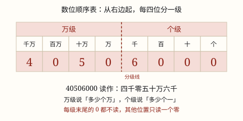

亿以内数的认识与读写
十万、百万、千万还是「满十进一」长出来的；数位从右边起每四位一级，分好级再读，中间末尾的 0 才不会读错。
| 所属主题 | 数的意义和性质 |
|---|---|
| 所属模块 | 数与代数 |
| 课标学段 | 第二学段（3~4年级） |
| 前置知识 | 万以内数的读写与组成 |
| 核心素养 | 数感符号意识推理意识 |
教材定位
人民教育出版社《2024年版》
对应四上第 1 单元「万以上数的认识」：亿以内数的认识与读写、改写与求近似数。
课标要求
| 数与代数·数与运算 | 在具体情境中，认识万以上的数，了解十进制计数法；探索并掌握多位数的乘除法，感悟从未知到已知的转化（例8）。 印刷第 20 页 行为动词：掌握 |
|---|---|
| 数与代数·数与运算 | 会运用数描述生活情境中事物的特征（例10），逐步形成数感、运算能力和初步的推理意识。 印刷第 21 页 行为动词：运用 |
说明
数到「万」还没到头。10 个一万是十万，10 个十万是百万，10 个百万是千万——还是那条老规矩：满十就换一个更大的单位，这套办法叫十进制计数法。
每个单位都站在自己的数位上。从右边起依次是个位、十位、百位、千位、万位、十万位、百万位、千万位。同一个 5，站在个位上是 5 个一，站在百万位上就是 5 个百万。
数位一多容易看花眼，所以规定从右边起每四个数位分一级：个级（个、十、百、千）、万级（万、十万、百万、千万）。读之前先在数中间画一条分级线，比如 40506000 分成 4050 | 6000。
读的时候先读万级，按「几千几百几十几」读，读完加一个「万」字；再读个级，读完不加字。每一级末尾的 0 都不读，其他位置上不管连着几个 0，都只读一个「零」。所以 40506000 读作四千零五十万六千。
写数反过来做：先想好每一级各有哪几位，从高位写起，哪一位上一个单位也没有就写 0 占位，每级必须写满四位。「三千零五万零六」写作 30050006。
使用场景
看新闻里的大数：全国高铁运营里程、一个城市的常住人口、一年送出的快递件数，都是七八位数，读错一位就差出十万八千里。
城市统计表：表上写 12560000 人，你要能一口读出「一千二百五十六万」，才知道这个城市有多大。
图书馆、博物馆的藏品编号：像 30050006 这样的编号，少写一个 0 就再也查不到东西。
工程和预算：一座桥的造价、一条地铁的投资，报表上都用「万元」作单位，先得把大数读准、写准。
数身边的大数：全校一学期用掉多少张纸、体育场能坐多少人，都要用上万、上十万的数来说。
注意点
先分级再读，别从左往右一个数字一个数字念。八位数从右往左数四位画一条线，万级几位、个级几位一眼看清。
级末尾的 0 不读，级首的 0 要读。106000 读「十万六千」，不能读成「十万零六千」；80500 读「八万零五百」，那个「零」非读不可。
「万」字只在万级读完时报一次。12560000 是一千二百五十六万，后面不用再补一个「零」，也不能读成「一千二百五十六万零」。
写数时每一级都要写满四位。「三千零五万零六」写成 30506 就全乱了，正确是 30050006。
别把「用万作单位」当成换算。1 万 = 10000，说「1256 万」只是换了个说法，数的大小一点没变。
为什么是这样

图 1：四位一级的数位顺序表，红色的分级线把 40506000 切成「4050 万」和「6000」两段
算理推导
先看数是怎么长出来的：10 个一捆成一个十，10 个十扎成一个百，10 个百叠成一个千，10 个千再垛成一个万。每四位刚好走完「个、十、百、千」一整圈，第五位必须换一个新名字——「万」。
再往上：万位上面还有十万位、百万位、千万位，进率也全是 10。数到 10 个千万又该换名字了，那一位叫「亿」。所以你看到的是一圈一圈重复：个、十、百、千 → 万、十万、百万、千万 → 亿、十亿……每一圈都是四位。
关键在这里：万级的四位和个级的四位是一一对应的。万位管「几个万」，正像个位管「几个一」；十万位管「几个十万」，正像十位管「几个十」。既然每一圈内部的关系完全一样，读数时就可以把每一圈当成一个万以内的数来读，读完再报这一圈的名字。
拿 40506000 试一遍：分级线一画，4050 | 6000。万级 4050 按万以内的读法读成「四千零五十」，后面报一个「万」；个级 6000 读成「六千」，后面没有名字可报。合起来就是四千零五十万六千。不分级，你得同时照顾八个数位；分了级，只要照顾两个四位数。
再看 0 的规矩为什么长这样。每一级末尾那几个 0，位置已经被「这一级到此为止」说清楚了：4050 里那个 0 在万级末尾，后面紧跟的就是「万」字，听的人知道你已报完这一级，不必再出声。可 0 一旦出现在一级的开头或中间，它就是个断层——80500 的个级是 0500，一开口就是空的，不读一声「零」，别人会以为 5 站在千位上。所以 0 只要不在级尾就得读，而且连着几个也只读一个：听的人只需要知道「这里跳过了一段」，跳过几位并不影响他把数写对。
写数就是这套逻辑倒过来：把要写的数按「万」切成两段，每段写满四位，不够的前面补 0。三千零五万零六 → 万级「三千零五」写 3005，个级「零六」写 0006，拼成 30050006。分段写，就不会漏 0。
动手实验
找一个八档计数器（或在纸上画八个数位格）。先在个级拨出 9999，再往个位添 1 颗珠子：个位满十，十颗退回去、十位进一颗；十位也满十，再退回去、百位进一颗；一路连锁下去，最后个级的四档全部回到 0，万位多出 1 颗——9999 添 1 就是 10000。这一步会让你亲眼看见「四位刚好一圈」：一圈满了，就得整体进位到下一圈。接着拨 40506000：万级拨 4、0、5、0，个级拨 6、0、0、0，一边拨一边读，再抄在本子上画分级线对一对。最后随意拨出 80500 和 106000 各读一次，专门盯着「级首的 0」和「级尾的 0」有什么区别。
按场景的例题
例 1（场景：行程出行） 新建的城际铁路有多长
一条新建城际铁路全长 106000 米。这个数怎么读？合多少千米？
解：从右往左数四位画分级线：10 | 6000。万级是 10，读「十万」；个级是 6000，读「六千」，级首没有 0，所以不加「零」。读作十万六千。106000 ÷ 1000 = 106，合 106 千米。
答：读作十万六千，合 106 千米。
例 2（场景：计量与估算） 统计一座城市的常住人口
某市常住人口 12560000 人。这个数怎么读？如果改用「万」作单位，是多少万？
解：分级：1256 | 0000。万级 1256 读「一千二百五十六」，加一个「万」字；个级四位全是 0，整级不读，也不用补「零」。读作一千二百五十六万。改用「万」作单位就是 1256 万。
答：读作一千二百五十六万，也就是 1256 万。
例 3（场景：校园生活） 学校图书馆清点藏书
学校图书馆原有藏书 80500 册，这学期新购进 2000 册。现在一共有多少册？这个数怎么读？
解：先算总数：80500 + 2000 = 82500 册。分级：8 | 2500，万级 8 读「八万」，个级 2500 读「二千五百」，读作八万二千五百。顺便看看原来的 80500：8 | 0500，个级级首是 0，要读一个「零」，读作八万零五百。
答：一共 82500 册，读作八万二千五百。
例 4（场景：自然现象） 月球到地球有多远
月球到地球的平均距离约三十八万四千千米。这个数写作多少？它是由几个十万、几个万、几个千组成的？
解：按「万」切成两段：万级「三十八万」写 38，个级「四千」写 4000，拼成 384000。对照数位看：十万位 3、万位 8、千位 4，其余各位是 0，所以由 3 个十万、8 个万和 4 个千组成，即 300000 + 80000 + 4000。
答：写作 384000，由 3 个十万、8 个万和 4 个千组成。
常用推论
十进制进率：10 个一万是十万，10 个十万是百万，10 个百万是千万，10 个千万是一亿；相邻两个计数单位之间的进率都是 10。
数位顺序（从右起）：个、十、百、千 ｜ 万、十万、百万、千万 ｜ 亿……每四位一级，依次叫个级、万级、亿级。
读数规则：先分级，从万级读起；每级末尾的 0 都不读，其他位置不管几个 0 只读一个「零」；读完万级要加一个「万」字。
写数规则：从高位写起，每一级写满四位，哪一位上一个单位也没有就写 0 占位。
单位改写：1 万 = 10000，所以 12560000 可以写成 1256 万，大小不变；反过来 1256 万就是 12560000。
最大的四位数是 9999，添 1 得最小的五位数 10000；最大的八位数是 99999999，添 1 就是一亿。
易错点
错106000 读成「十万零六千」。
为什么错个级是 6000，千位上有 6，级首并不是空的，不该读「零」。万级 10 末尾的那个 0 属于级尾，也不读。
正确读作十万六千。可以这样检查：把它写出来再读一遍，若读成「十万零六千」，就是凭空多读了一个「零」——按规范读法十万六千写回去，正是 106000。
错「三千零五万零六」写成 30506。
为什么错每一级都要写满四位。写成 30506 只有五位，万级少了两个 0、个级也少了三个 0，数一下子缩小到原来的千分之一。
正确万级「三千零五」写 3005，个级「零六」写 0006，合起来是 30050006。
错12560000 读成「一千二百五十六万零」。
为什么错个级四位全是 0，整个级都不读，末尾也不需要补一个「零」——那个「零」并没有对应的非零数字。
正确读作一千二百五十六万。
错把 80500 和 85000 当成同一个数，都读「八万五千」。
为什么错80500 的个级是 0500，千位是 0、百位是 5；85000 的个级是 5000，千位是 5。两个数差 85000 - 80500 = 4500。
正确80500 读八万零五百，85000 读八万五千。读之前先分级，5 站在哪一位就清楚了。
直观理解
把八个数位想成运动会入场的队伍，规定每四人站一排，排头举一块牌子：前一排举「个」，后一排举「万」。报数时不用一个人一个人报，每排自己报「几千几百几十几」，报完再喊一声牌子上的名字——「四千零五十」这一排喊完加一声「万」，下一排接着喊「六千」。前排末尾空着的位子不用出声，反正牌子一举，大家都知道这一排结束了；可要是空位出现在排头，就得喊一声「零」，提醒后面的人：这一排开头是空着的。
从右起，四位一级；先分级，再读数。级末尾的零不读，别处有零读一个；写数每级写满四位，缺位补零不会错。